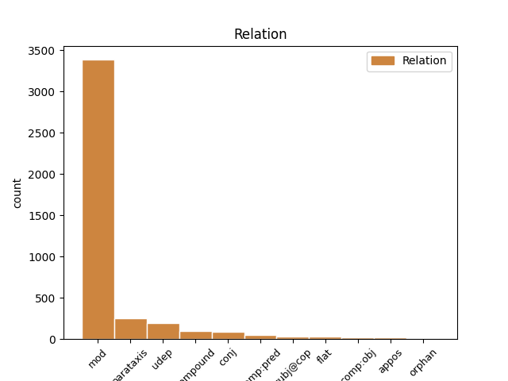

Distribution of features within this leaf

Agreement Rules sorted by frequency.
- When the dependent token is the modifer(mod) of the head token, and the head token is NOUN and the dependent token is NUM.
1 1995 _ _ _ _ 0 _ _ _
2 : _ _ _ _ 0 _ _ _
3 töötasid _ _ _ _ 0 _ _ _
4 rohkem _ _ _ _ 0 _ _ _
5 kui _ _ _ _ 0 _ _ _
6 6 6 NUM N Case=Nom|Number=Sing|NumForm=Digit|NumType=Card 7 mod _ _
7 aastat aasta NOUN S Case=Par|Number=Sing 0 _ _ _
8 tagasi _ _ _ _ 0 _ _ _
1 Majanduse _ _ _ _ 0 _ _ _
2 madalseisus madal_seis NOUN S Case=Ine|Number=Sing 0 _ _ _
3 ( _ _ _ _ 0 _ _ _
4 1999 1999 NUM N Case=Nom|Number=Sing|NumForm=Digit|NumType=Card 2 parataxis _ SpaceAfter=No
5 ) _ _ _ _ 0 _ _ _
6 oli _ _ _ _ 0 _ _ _
7 peamiseks _ _ _ _ 0 _ _ _
8 tööhõive _ _ _ _ 0 _ _ _
9 tekitajaks _ _ _ _ 0 _ _ _
10 välissektor _ _ _ _ 0 _ _ _
11 ( _ _ _ _ 0 _ _ _
12 väliskapital _ _ _ _ 0 _ _ _
13 kui _ _ _ _ 0 _ _ _
14 eksport _ _ _ _ 0 _ _ _
15 ) _ _ _ _ 0 _ _ _
16 . _ _ _ _ 0 _ _ _
1 Päikese _ _ _ _ 0 _ _ _
2 massiga _ _ _ _ 0 _ _ _
3 tähe _ _ _ _ 0 _ _ _
4 valmimine _ _ _ _ 0 _ _ _
5 võtab _ _ _ _ 0 _ _ _
6 aega _ _ _ _ 0 _ _ _
7 kümmekond kümmekond NUM N Case=Nom|Number=Sing|NumForm=Letter|NumType=Card 8 compound _ _
8 miljonit miljon NUM N Case=Par|Number=Sing|NumForm=Letter|NumType=Card 0 _ _ _
9 aastat _ _ _ _ 0 _ _ _
10 , _ _ _ _ 0 _ _ _
11 tema _ _ _ _ 0 _ _ _
12 üpris _ _ _ _ 0 _ _ _
13 stabiilne _ _ _ _ 0 _ _ _
14 kiirgamise _ _ _ _ 0 _ _ _
15 etapp _ _ _ _ 0 _ _ _
16 termotuumareaktsioonide _ _ _ _ 0 _ _ _
17 energia _ _ _ _ 0 _ _ _
18 varal _ _ _ _ 0 _ _ _
19 aga _ _ _ _ 0 _ _ _
20 ligi _ _ _ _ 0 _ _ _
21 samapalju _ _ _ _ 0 _ _ _
22 miljardeid _ _ _ _ 0 _ _ _
23 aastaid _ _ _ _ 0 _ _ _
24 . _ _ _ _ 0 _ _ _
1 Teatud _ _ _ _ 0 _ _ _
2 kasv _ _ _ _ 0 _ _ _
3 teenindussektoris _ _ _ _ 0 _ _ _
4 hõivatute _ _ _ _ 0 _ _ _
5 arvus _ _ _ _ 0 _ _ _
6 toimus toimuma VERB V Mood=Ind|Number=Sing|Person=3|Tense=Past|VerbForm=Fin|Voice=Act 0 _ _ _
7 1994 1994 NUM N Case=Nom|Number=Sing|NumForm=Digit|NumType=Card 6 udep _ SpaceAfter=No
8 , _ _ _ _ 0 _ _ _
9 ( _ _ _ _ 0 _ _ _
10 ka _ _ _ _ 0 _ _ _
11 töölt-tööle _ _ _ _ 0 _ _ _
12 liikumine _ _ _ _ 0 _ _ _
13 oli _ _ _ _ 0 _ _ _
14 sellel _ _ _ _ 0 _ _ _
15 perioodil _ _ _ _ 0 _ _ _
16 kõrgeim _ _ _ _ 0 _ _ _
17 ) _ _ _ _ 0 _ _ _
18 millele _ _ _ _ 0 _ _ _
19 on _ _ _ _ 0 _ _ _
20 järgnenud _ _ _ _ 0 _ _ _
21 aga _ _ _ _ 0 _ _ _
22 kerge _ _ _ _ 0 _ _ _
23 edasine _ _ _ _ 0 _ _ _
24 langus _ _ _ _ 0 _ _ _
25 . _ _ _ _ 0 _ _ _
1 See _ _ _ _ 0 _ _ _
2 tähendab _ _ _ _ 0 _ _ _
3 , _ _ _ _ 0 _ _ _
4 et _ _ _ _ 0 _ _ _
5 täna _ _ _ _ 0 _ _ _
6 tuleb _ _ _ _ 0 _ _ _
7 Eesti _ _ _ _ 0 _ _ _
8 keskmise _ _ _ _ 0 _ _ _
9 palga _ _ _ _ 0 _ _ _
10 saajal _ _ _ _ 0 _ _ _
11 suurlinnakorteri _ _ _ _ 0 _ _ _
12 ostmiseks _ _ _ _ 0 _ _ _
13 sama _ _ _ _ 0 _ _ _
14 kaua _ _ _ _ 0 _ _ _
15 raha _ _ _ _ 0 _ _ _
16 koguda _ _ _ _ 0 _ _ _
17 kui _ _ _ _ 0 _ _ _
18 viis viis NUM N Case=Nom|Number=Sing|NumForm=Letter|NumType=Card 0 _ _ _
19 või _ _ _ _ 0 _ _ _
20 kümme kümme NUM N Case=Nom|Number=Sing|NumForm=Letter|NumType=Card 18 conj _ _
21 aastat _ _ _ _ 0 _ _ _
22 tagasi _ _ _ _ 0 _ _ _
23 . _ _ _ _ 0 _ _ _
1 ( _ _ _ _ 0 _ _ _
2 5 5 NUM N Case=Nom|Number=Sing|NumForm=Digit|NumType=Card 8 parataxis _ SpaceAfter=No
3 ) _ _ _ _ 0 _ _ _
4 Eesti _ _ _ _ 0 _ _ _
5 tööjõu _ _ _ _ 0 _ _ _
6 mobiilsuse _ _ _ _ 0 _ _ _
7 suurenemine _ _ _ _ 0 _ _ _
8 on olema AUX V Mood=Ind|Number=Sing|Person=3|Tense=Pres|VerbForm=Fin|Voice=Act 0 _ _ _
9 töötuse _ _ _ _ 0 _ _ _
10 taseme _ _ _ _ 0 _ _ _
11 vähenemise _ _ _ _ 0 _ _ _
12 põhjuseks _ _ _ _ 0 _ _ _
13 . _ _ _ _ 0 _ _ _
1 Eesti _ _ _ _ 0 _ _ _
2 andmetel _ _ _ _ 0 _ _ _
3 on olema AUX V Mood=Ind|Number=Sing|Person=3|Tense=Pres|VerbForm=Fin|Voice=Act 0 _ _ _
4 korrelatsioon _ _ _ _ 0 _ _ _
5 töötajate _ _ _ _ 0 _ _ _
6 arvu _ _ _ _ 0 _ _ _
7 ja _ _ _ _ 0 _ _ _
8 töötundide _ _ _ _ 0 _ _ _
9 kaudu _ _ _ _ 0 _ _ _
10 leitud _ _ _ _ 0 _ _ _
11 tootlikkuste _ _ _ _ 0 _ _ _
12 näitajate _ _ _ _ 0 _ _ _
13 vahel _ _ _ _ 0 _ _ _
14 ligi _ _ _ _ 0 _ _ _
15 0,99 0,99 NUM N Case=Nom|Number=Sing|NumForm=Digit|NumType=Card 3 comp:pred _ _
16 ( _ _ _ _ 0 _ _ _
17 Varblane _ _ _ _ 0 _ _ _
18 , _ _ _ _ 0 _ _ _
19 2001 _ _ _ _ 0 _ _ _
20 : _ _ _ _ 0 _ _ _
21 4 _ _ _ _ 0 _ _ _
22 ) _ _ _ _ 0 _ _ _
23 . _ _ _ _ 0 _ _ _
1 Selle _ _ _ _ 0 _ _ _
2 tendentsi _ _ _ _ 0 _ _ _
3 seos _ _ _ _ 0 _ _ _
4 liikumisega _ _ _ _ 0 _ _ _
5 võib _ _ _ _ 0 _ _ _
6 olla _ _ _ _ 0 _ _ _
7 kahene _ _ _ _ 0 _ _ _
8 : _ _ _ _ 0 _ _ _
9 ühelt _ _ _ _ 0 _ _ _
10 poolt _ _ _ _ 0 _ _ _
11 kaasnes kaasnema VERB V Mood=Ind|Number=Sing|Person=3|Tense=Past|VerbForm=Fin|Voice=Act 0 _ _ _
12 kiirete _ _ _ _ 0 _ _ _
13 muutustega _ _ _ _ 0 _ _ _
14 lühiajalise _ _ _ _ 0 _ _ _
15 tööpuuduse _ _ _ _ 0 _ _ _
16 suhteliselt _ _ _ _ 0 _ _ _
17 kõrge _ _ _ _ 0 _ _ _
18 tase _ _ _ _ 0 _ _ _
19 ( _ _ _ _ 0 _ _ _
20 eriti _ _ _ _ 0 _ _ _
21 enne _ _ _ _ 0 _ _ _
22 1992/1993 1992/1993 NUM N Case=Nom|Number=Sing|NumForm=Digit|NumType=Card 11 parataxis _ SpaceAfter=No
23 ) _ _ _ _ 0 _ _ _
24 , _ _ _ _ 0 _ _ _
25 võrreldes _ _ _ _ 0 _ _ _
26 pikaajalise _ _ _ _ 0 _ _ _
27 tööpuudusega _ _ _ _ 0 _ _ _
28 . _ _ _ _ 0 _ _ _
1 Umbes _ _ _ _ 0 _ _ _
2 ühel üks NUM N Case=Ade|Number=Sing|NumForm=Letter|NumType=Card 3 mod _ _
3 kolmandikul kolmandik NUM N Case=Ade|Number=Sing|NumForm=Letter|NumType=Card 0 _ _ _
4 patsientidest _ _ _ _ 0 _ _ _
5 võib _ _ _ _ 0 _ _ _
6 esineda _ _ _ _ 0 _ _ _
7 kerge _ _ _ _ 0 _ _ _
8 kuni _ _ _ _ 0 _ _ _
9 mõõdukas _ _ _ _ 0 _ _ _
10 steatorröa _ _ _ _ 0 _ _ _
11 ( _ _ _ _ 0 _ _ _
12 4 _ _ _ _ 0 _ _ _
13 ) _ _ _ _ 0 _ _ _
14 . _ _ _ _ 0 _ _ _
1 Kuni _ _ _ _ 0 _ _ _
2 2000 2000 NUM N Case=Gen|Number=Sing|NumForm=Digit|NumType=Card 3 udep _ _
3 kroonise kroonine ADJ A Case=Gen|Degree=Pos|Number=Sing 0 _ _ _
4 palgaga _ _ _ _ 0 _ _ _
5 rahulduvate _ _ _ _ 0 _ _ _
6 osakaal _ _ _ _ 0 _ _ _
7 on _ _ _ _ 0 _ _ _
8 järsult _ _ _ _ 0 _ _ _
9 langenud _ _ _ _ 0 _ _ _
10 ka _ _ _ _ 0 _ _ _
11 pärast _ _ _ _ 0 _ _ _
12 2000. _ _ _ _ 0 _ _ _
13 a _ _ _ _ 0 _ _ _
14 . _ _ _ _ 0 _ _ _
1 1989-1991 1989-1991 NUM N Case=Nom|Number=Sing|NumForm=Digit|NumType=Card 2 udep _ _
2 oli olema AUX V Mood=Ind|Number=Sing|Person=3|Tense=Past|VerbForm=Fin|Voice=Act 0 _ _ _
3 osaajaga _ _ _ _ 0 _ _ _
4 töötamise _ _ _ _ 0 _ _ _
5 soovi _ _ _ _ 0 _ _ _
6 puudumine _ _ _ _ 0 _ _ _
7 põhjendusest _ _ _ _ 0 _ _ _
8 tähtsaim _ _ _ _ 0 _ _ _
9 , _ _ _ _ 0 _ _ _
10 kuid _ _ _ _ 0 _ _ _
11 90ndate _ _ _ _ 0 _ _ _
12 keskel _ _ _ _ 0 _ _ _
13 on _ _ _ _ 0 _ _ _
14 selle _ _ _ _ 0 _ _ _
15 osatähtsus _ _ _ _ 0 _ _ _
16 langenud _ _ _ _ 0 _ _ _
17 ning _ _ _ _ 0 _ _ _
18 1997. _ _ _ _ 0 _ _ _
19 aastast _ _ _ _ 0 _ _ _
20 kõikumistega _ _ _ _ 0 _ _ _
21 taas _ _ _ _ 0 _ _ _
22 tõusma _ _ _ _ 0 _ _ _
23 hakanud _ _ _ _ 0 _ _ _
24 . _ _ _ _ 0 _ _ _
1 Nende _ _ _ _ 0 _ _ _
2 uurimuses _ _ _ _ 0 _ _ _
3 söödeti _ _ _ _ 0 _ _ _
4 60 60 NUM N Case=All|Number=Sing|NumForm=Digit|NumType=Card 5 mod _ _
5 naiskatsealusele nais_katse_alune ADJ A Case=All|Degree=Pos|Number=Sing 0 _ _ _
6 kas _ _ _ _ 0 _ _ _
7 3 _ _ _ _ 0 _ _ _
8 ω-3-rasvhapetega _ _ _ _ 0 _ _ _
9 rikastatud _ _ _ _ 0 _ _ _
10 muna _ _ _ _ 0 _ _ _
11 või _ _ _ _ 0 _ _ _
12 200 _ _ _ _ 0 _ _ _
13 g _ _ _ _ 0 _ _ _
14 broileri- _ _ _ _ 0 _ _ _
15 või _ _ _ _ 0 _ _ _
16 200 _ _ _ _ 0 _ _ _
17 g _ _ _ _ 0 _ _ _
18 sealiha _ _ _ _ 0 _ _ _
19 ( _ _ _ _ 0 _ _ _
20 samuti _ _ _ _ 0 _ _ _
21 ω-3-rasvhapetega _ _ _ _ 0 _ _ _
22 rikastatud _ _ _ _ 0 _ _ _
23 ) _ _ _ _ 0 _ _ _
24 päevas _ _ _ _ 0 _ _ _
25 . _ _ _ _ 0 _ _ _
1 3. _ _ _ _ 0 _ _ _
2 Korraldatakse _ _ _ _ 0 _ _ _
3 2 _ _ _ _ 0 _ _ _
4 rahvusvahelist _ _ _ _ 0 _ _ _
5 konverentsi _ _ _ _ 0 _ _ _
6 ( _ _ _ _ 0 _ _ _
7 september _ _ _ _ 0 _ _ _
8 2006 _ _ _ _ 0 _ _ _
9 Brüsselis _ _ _ _ 0 _ _ _
10 ja _ _ _ _ 0 _ _ _
11 jaanuar jaanuar NOUN S Case=Nom|Number=Sing 0 _ _ _
12 2008 2008 NUM N Case=Nom|Number=Sing|NumForm=Digit|NumType=Card 11 flat _ _
13 Prahas _ _ _ _ 0 _ _ _
14 ) _ _ _ _ 0 _ _ _
15 . _ _ _ _ 0 _ _ _
1 Mõningate _ _ _ _ 0 _ _ _
2 reservatsioonidega _ _ _ _ 0 _ _ _
3 võib _ _ _ _ 0 _ _ _
4 siin _ _ _ _ 0 _ _ _
5 vaadelda _ _ _ _ 0 _ _ _
6 Eametsa _ _ _ _ 0 _ _ _
7 ja _ _ _ _ 0 _ _ _
8 Rõõmu _ _ _ _ 0 _ _ _
9 arvutusi _ _ _ _ 0 _ _ _
10 liikumiste _ _ _ _ 0 _ _ _
11 tõenäosuste _ _ _ _ 0 _ _ _
12 kohta _ _ _ _ 0 _ _ _
13 üle _ _ _ _ 0 _ _ _
14 kogu _ _ _ _ 0 _ _ _
15 perioodi _ _ _ _ 0 _ _ _
16 , _ _ _ _ 0 _ _ _
17 kuigi _ _ _ _ 0 _ _ _
18 Raul _ _ _ _ 0 _ _ _
19 Eametsa _ _ _ _ 0 _ _ _
20 arvutused _ _ _ _ 0 _ _ _
21 ( _ _ _ _ 0 _ _ _
22 joonisel _ _ _ _ 0 _ _ _
23 7 _ _ _ _ 0 _ _ _
24 1989. _ _ _ _ 0 _ _ _
25 ja _ _ _ _ 0 _ _ _
26 1994. _ _ _ _ 0 _ _ _
27 a. _ _ _ _ 0 _ _ _
28 kohta _ _ _ _ 0 _ _ _
29 ) _ _ _ _ 0 _ _ _
30 ning _ _ _ _ 0 _ _ _
31 Marit _ _ _ _ 0 _ _ _
32 Rõõmu _ _ _ _ 0 _ _ _
33 vastavad _ _ _ _ 0 _ _ _
34 arvutused _ _ _ _ 0 _ _ _
35 ( _ _ _ _ 0 _ _ _
36 joonisel joonis NOUN S Case=Ade|Number=Sing 0 _ _ _
37 7 7 NUM N Case=Nom|Number=Sing|NumForm=Digit|NumType=Card 36 appos _ _
38 1997. _ _ _ _ 0 _ _ _
39 a. _ _ _ _ 0 _ _ _
40 , _ _ _ _ 0 _ _ _
41 1998. _ _ _ _ 0 _ _ _
42 a. _ _ _ _ 0 _ _ _
43 , _ _ _ _ 0 _ _ _
44 1999. _ _ _ _ 0 _ _ _
45 a. _ _ _ _ 0 _ _ _
46 ) _ _ _ _ 0 _ _ _
47 on _ _ _ _ 0 _ _ _
48 tehtud _ _ _ _ 0 _ _ _
49 mõnevõrra _ _ _ _ 0 _ _ _
50 erinevate _ _ _ _ 0 _ _ _
51 metoodikatega _ _ _ _ 0 _ _ _
1 12. _ _ _ _ 0 _ _ _
2 9-ndas _ _ _ _ 0 _ _ _
3 reas _ _ _ _ 0 _ _ _
4 on olema AUX V Mood=Ind|Number=Sing|Person=3|Tense=Pres|VerbForm=Fin|Voice=Act 0 _ _ _
5 4,7 4,7 NUM N Case=Nom|Number=Sing|NumForm=Digit|NumType=Card 4 subj@cop _ SpaceAfter=No
6 , _ _ _ _ 0 _ _ _
7 8 _ _ _ _ 0 _ _ _
8 . _ _ _ _ 0 _ _ _
1 ETU _ _ _ _ 0 _ _ _
2 andmetel _ _ _ _ 0 _ _ _
3 moodustab moodustama VERB V Mood=Ind|Number=Sing|Person=3|Tense=Pres|VerbForm=Fin|Voice=Act 0 _ _ _
4 õppijate _ _ _ _ 0 _ _ _
5 osakaal _ _ _ _ 0 _ _ _
6 hõivatutest _ _ _ _ 0 _ _ _
7 ca _ _ _ _ 0 _ _ _
8 1/5 1/5 NUM N Case=Nom|Number=Sing|NumForm=Digit|NumType=Card 3 comp:obj _ SpaceAfter=No
9 . _ _ _ _ 0 _ _ _
1 Lõpetanud _ _ _ _ 0 _ _ _
2 majandusinsenerina _ _ _ _ 0 _ _ _
3 majandusliku _ _ _ _ 0 _ _ _
4 informatsiooni _ _ _ _ 0 _ _ _
5 töötlemise _ _ _ _ 0 _ _ _
6 erialal _ _ _ _ 0 _ _ _
7 Tallinna _ _ _ _ 0 _ _ _
8 Polütehnilise _ _ _ _ 0 _ _ _
9 Instituudi _ _ _ _ 0 _ _ _
10 1973 _ _ _ _ 0 _ _ _
11 ja _ _ _ _ 0 _ _ _
12 aspirantuuri aspirantuur NOUN S Case=Gen|Number=Sing 0 _ _ _
13 1984 1984 NUM N Case=Nom|Number=Sing|NumForm=Digit|NumType=Card 12 udep _ _
14 matemaatiliste _ _ _ _ 0 _ _ _
15 meetodite _ _ _ _ 0 _ _ _
16 kasutamine _ _ _ _ 0 _ _ _
17 majanduses _ _ _ _ 0 _ _ _
18 erialal _ _ _ _ 0 _ _ _
19 . _ _ _ _ 0 _ _ _
1 Kuuskümmend _ _ _ _ 0 _ _ _
2 üks _ _ _ _ 0 _ _ _
3 sammu _ _ _ _ 0 _ _ _
4 väravani _ _ _ _ 0 _ _ _
5 , _ _ _ _ 0 _ _ _
6 kaksteist _ _ _ _ 0 _ _ _
7 tagaukseni _ _ _ _ 0 _ _ _
8 , _ _ _ _ 0 _ _ _
9 neliteist _ _ _ _ 0 _ _ _
10 trepiastet trepi_aste NOUN S Case=Par|Number=Sing 0 _ _ _
11 ja _ _ _ _ 0 _ _ _
12 viimased _ _ _ _ 0 _ _ _
13 viis viis NUM N Case=Nom|Number=Sing|NumForm=Letter|NumType=Card 10 conj _ _
14 uksekellani _ _ _ _ 0 _ _ _
15 . _ _ _ _ 0 _ _ _
1 Vabaks _ _ _ _ 0 _ _ _
2 jääb _ _ _ _ 0 _ _ _
3 vaid _ _ _ _ 0 _ _ _
4 veerg _ _ _ _ 0 _ _ _
5 8 _ _ _ _ 0 _ _ _
6 , _ _ _ _ 0 _ _ _
7 millel _ _ _ _ 0 _ _ _
8 keskmises _ _ _ _ 0 _ _ _
9 kolmikus _ _ _ _ 0 _ _ _
10 on _ _ _ _ 0 _ _ _
11 kaks _ _ _ _ 0 _ _ _
12 vaba _ _ _ _ 0 _ _ _
13 kohta _ _ _ _ 0 _ _ _
14 58 _ _ _ _ 0 _ _ _
15 ja _ _ _ _ 0 _ _ _
16 68 _ _ _ _ 0 _ _ _
17 , _ _ _ _ 0 _ _ _
18 kuid _ _ _ _ 0 _ _ _
19 kuuenda _ _ _ _ 0 _ _ _
20 rea _ _ _ _ 0 _ _ _
21 5 _ _ _ _ 0 _ _ _
22 jätab _ _ _ _ 0 _ _ _
23 alles _ _ _ _ 0 _ _ _
24 vaid _ _ _ _ 0 _ _ _
25 valiku _ _ _ _ 0 _ _ _
26 5 5 NUM N Case=Nom|Number=Sing|NumForm=Digit|NumType=Card 0 _ _ _
27 - _ _ _ _ 0 _ _ _
28 > _ _ _ _ 0 _ _ _
29 58 58 NUM N Case=Nom|Number=Sing|NumForm=Digit|NumType=Card 26 flat _ SpaceAfter=No
30 . _ _ _ _ 0 _ _ _
1 Ajavahemikus _ _ _ _ 0 _ _ _
2 1979-1987 _ _ _ _ 0 _ _ _
3 ei _ _ _ _ 0 _ _ _
4 ületanud _ _ _ _ 0 _ _ _
5 majanduskasv _ _ _ _ 0 _ _ _
6 kordagi _ _ _ _ 0 _ _ _
7 3 _ _ _ _ 0 _ _ _
8 % _ _ _ _ 0 _ _ _
9 ja _ _ _ _ 0 _ _ _
10 oli olema AUX V Mood=Ind|Number=Sing|Person=3|Tense=Past|VerbForm=Fin|Voice=Act 0 _ _ _
11 negatiivne _ _ _ _ 0 _ _ _
12 või _ _ _ _ 0 _ _ _
13 praktiliselt _ _ _ _ 0 _ _ _
14 null null NUM N Case=Nom|Number=Sing|NumForm=Letter|NumType=Card 10 conj _ _
15 enamiku _ _ _ _ 0 _ _ _
16 ajast _ _ _ _ 0 _ _ _
17 . _ _ _ _ 0 _ _ _
1 See _ _ _ _ 0 _ _ _
2 gaasipilv _ _ _ _ 0 _ _ _
3 , _ _ _ _ 0 _ _ _
4 millest _ _ _ _ 0 _ _ _
5 tekkisid _ _ _ _ 0 _ _ _
6 Päike _ _ _ _ 0 _ _ _
7 ja _ _ _ _ 0 _ _ _
8 Maa _ _ _ _ 0 _ _ _
9 , _ _ _ _ 0 _ _ _
10 pidi _ _ _ _ 0 _ _ _
11 sisaldama _ _ _ _ 0 _ _ _
12 juba _ _ _ _ 0 _ _ _
13 paari paar NUM N Case=Gen|Number=Sing|NumForm=Letter|NumType=Card 14 compound _ _
14 % % SYM N Case=Nom|Number=Sing|NumForm=Digit|NumType=Card 0 _ _ _
15 jagu _ _ _ _ 0 _ _ _
16 vesinikust _ _ _ _ 0 _ _ _
17 ja _ _ _ _ 0 _ _ _
18 heeliumist _ _ _ _ 0 _ _ _
19 raskemaid _ _ _ _ 0 _ _ _
20 aatomeid _ _ _ _ 0 _ _ _
21 . _ _ _ _ 0 _ _ _
1 Jakobson _ _ _ _ 0 _ _ _
2 märkis _ _ _ _ 0 _ _ _
3 , _ _ _ _ 0 _ _ _
4 et _ _ _ _ 0 _ _ _
5 tund _ _ _ _ 0 _ _ _
6 aega _ _ _ _ 0 _ _ _
7 vabal _ _ _ _ 0 _ _ _
8 jääl _ _ _ _ 0 _ _ _
9 uisutamist _ _ _ _ 0 _ _ _
10 maksab maksma VERB V Mood=Ind|Number=Sing|Person=3|Tense=Pres|VerbForm=Fin|Voice=Act 0 _ _ _
11 täiskasvanule _ _ _ _ 0 _ _ _
12 25 25 NUM N Case=All|Number=Sing|NumForm=Digit|NumType=Card 10 mod _ _
13 ja _ _ _ _ 0 _ _ _
14 lapsele _ _ _ _ 0 _ _ _
15 12 _ _ _ _ 0 _ _ _
16 krooni _ _ _ _ 0 _ _ _
17 . _ _ _ _ 0 _ _ _
1 1991 _ _ _ _ 0 _ _ _
2 võeti _ _ _ _ 0 _ _ _
3 vastu _ _ _ _ 0 _ _ _
4 ravikindlustuse _ _ _ _ 0 _ _ _
5 seadus _ _ _ _ 0 _ _ _
6 , _ _ _ _ 0 _ _ _
7 1994 1994 NUM N Case=Nom|Number=Sing|NumForm=Digit|NumType=Card 9 orphan _ _
8 tervishoiukorralduse _ _ _ _ 0 _ _ _
9 seadus seadus NOUN S Case=Nom|Number=Sing 0 _ _ _
10 . _ _ _ _ 0 _ _ _
1 Riigieelarvest riigi_eel_arve NOUN S Case=Ela|Number=Sing 0 _ _ _
2 6,2 _ _ _ _ 0 _ _ _
3 miljonit miljon NUM N Case=Par|Number=Sing|NumForm=Letter|NumType=Card 1 subj@cop _ SpaceAfter=No
4 . _ _ _ _ 0 _ _ _
1 15-69aastased _ _ _ _ 0 _ _ _
2 mitteaktiivsed _ _ _ _ 0 _ _ _
3 soo _ _ _ _ 0 _ _ _
4 ja _ _ _ _ 0 _ _ _
5 mitteaktiivsuse _ _ _ _ 0 _ _ _
6 põhjuse _ _ _ _ 0 _ _ _
7 järgi _ _ _ _ 0 _ _ _
8 , _ _ _ _ 0 _ _ _
9 ( _ _ _ _ 0 _ _ _
10 aastakeskmine aasta_keskmine ADJ A Case=Nom|Degree=Pos|Number=Sing 0 _ _ _
11 , _ _ _ _ 0 _ _ _
12 tuhat tuhat NUM N Case=Par|Number=Sing|NumForm=Letter|NumType=Card 10 conj _ SpaceAfter=No
13 ) _ _ _ _ 0 _ _ _
14 1989-2001 _ _ _ _ 0 _ _ _
1 Saksa _ _ _ _ 0 _ _ _
2 seeniorajakirjandus _ _ _ _ 0 _ _ _
3 teatab _ _ _ _ 0 _ _ _
4 vägagi _ _ _ _ 0 _ _ _
5 tagasihoidlikult _ _ _ _ 0 _ _ _
6 400 _ _ _ _ 0 _ _ _
7 000 _ _ _ _ 0 _ _ _
8 eakast eakas ADJ A Case=Ela|Degree=Pos|Number=Sing 0 _ _ _
9 ( _ _ _ _ 0 _ _ _
10 65+ 65+ NUM N Case=Nom|Number=Sing|NumForm=Digit|NumType=Card 8 parataxis _ SpaceAfter=No
11 ) _ _ _ _ 0 _ _ _
12 alkohoolikust _ _ _ _ 0 _ _ _
13 , _ _ _ _ 0 _ _ _
14 kellest _ _ _ _ 0 _ _ _
15 suurem _ _ _ _ 0 _ _ _
16 osa _ _ _ _ 0 _ _ _
17 on _ _ _ _ 0 _ _ _
18 naised _ _ _ _ 0 _ _ _
19 . _ _ _ _ 0 _ _ _
1 Selliseid _ _ _ _ 0 _ _ _
2 üritusi _ _ _ _ 0 _ _ _
3 , _ _ _ _ 0 _ _ _
4 kus _ _ _ _ 0 _ _ _
5 meeleavaldajaid _ _ _ _ 0 _ _ _
6 oli olema AUX V Mood=Ind|Number=Sing|Person=3|Tense=Past|VerbForm=Fin|Voice=Act 0 _ _ _
7 rohkem _ _ _ _ 0 _ _ _
8 kui _ _ _ _ 0 _ _ _
9 sada sada NUM N Case=Nom|Number=Sing|NumForm=Letter|NumType=Card 6 mod _ SpaceAfter=No
10 , _ _ _ _ 0 _ _ _
11 oli _ _ _ _ 0 _ _ _
12 viie _ _ _ _ 0 _ _ _
13 aasta _ _ _ _ 0 _ _ _
14 peale _ _ _ _ 0 _ _ _
15 kokku _ _ _ _ 0 _ _ _
16 49 _ _ _ _ 0 _ _ _
17 . _ _ _ _ 0 _ _ _
1 Neli _ _ _ _ 0 _ _ _
2 tundi _ _ _ _ 0 _ _ _
3 vahis _ _ _ _ 0 _ _ _
4 , _ _ _ _ 0 _ _ _
5 kaheksa kaheksa NUM N Case=Nom|Number=Sing|NumForm=Letter|NumType=Card 6 orphan _ _
6 vaba vaba ADJ A Case=Par|Degree=Pos|Number=Sing 0 _ _ _
7 . _ _ _ _ 0 _ _ _
1 Parem parem ADJ A Case=Nom|Degree=Cmp|Number=Sing 0 _ _ _
2 üks üks NUM N Case=Nom|Number=Sing|NumForm=Letter|NumType=Card 1 subj@cop _ _
3 kui _ _ _ _ 0 _ _ _
4 mitu _ _ _ _ 0 _ _ _
5 . _ _ _ _ 0 _ _ _
1 Siiditee _ _ _ _ 0 _ _ _
2 jagas jagama VERB V Mood=Ind|Number=Sing|Person=3|Tense=Past|VerbForm=Fin|Voice=Act 0 _ _ _
3 kaheks kaks NUM N Case=Tra|Number=Sing|NumForm=Letter|NumType=Card 2 comp:pred _ _
4 isegi _ _ _ _ 0 _ _ _
5 19. _ _ _ _ 0 _ _ _
6 sajandi _ _ _ _ 0 _ _ _
7 Aasia _ _ _ _ 0 _ _ _
8 , _ _ _ _ 0 _ _ _
9 lõunapoolseid _ _ _ _ 0 _ _ _
10 maid _ _ _ _ 0 _ _ _
11 püüdis _ _ _ _ 0 _ _ _
12 koloniseerida _ _ _ _ 0 _ _ _
13 Suurbritannia _ _ _ _ 0 _ _ _
14 , _ _ _ _ 0 _ _ _
15 põhjapoolseid _ _ _ _ 0 _ _ _
16 Venemaa _ _ _ _ 0 _ _ _
17 . _ _ _ _ 0 _ _ _
1 Keskmise _ _ _ _ 0 _ _ _
2 ploki _ _ _ _ 0 _ _ _
3 3 3 NUM N Case=Nom|Number=Sing|NumForm=Digit|NumType=Card 0 _ _ _
4 ( _ _ _ _ 0 _ _ _
5 24 24 NUM N Case=Nom|Number=Sing|NumForm=Digit|NumType=Card 3 parataxis _ SpaceAfter=No
6 ) _ _ _ _ 0 _ _ _
7 kõrvaldab _ _ _ _ 0 _ _ _
8 positsioonid _ _ _ _ 0 _ _ _
9 34 _ _ _ _ 0 _ _ _
10 ja _ _ _ _ 0 _ _ _
11 35 _ _ _ _ 0 _ _ _
12 ning _ _ _ _ 0 _ _ _
13 38 _ _ _ _ 0 _ _ _
14 pole _ _ _ _ 0 _ _ _
15 võimalik _ _ _ _ 0 _ _ _
16 8-ndas _ _ _ _ 0 _ _ _
17 veerus _ _ _ _ 0 _ _ _
18 oleva _ _ _ _ 0 _ _ _
19 3 _ _ _ _ 0 _ _ _
20 tõttu _ _ _ _ 0 _ _ _
21 . _ _ _ _ 0 _ _ _
Disagree Examples:
1 Padari _ _ _ _ 0 _ _ _
2 väljanägemine _ _ _ _ 0 _ _ _
3 esindab _ _ _ _ 0 _ _ _
4 üht _ _ _ _ 0 _ _ _
5 tüüpi _ _ _ _ 0 _ _ _
6 ameerika _ _ _ _ 0 _ _ _
7 poistebändi _ _ _ _ 0 _ _ _
8 imagost _ _ _ _ 0 _ _ _
9 , _ _ _ _ 0 _ _ _
10 kus _ _ _ _ 0 _ _ _
11 üks üks NUM N Case=Nom|Number=Sing|NumForm=Letter|NumType=Card 13 subj@cop _ _
12 poistest _ _ _ _ 0 _ _ _
13 on olema AUX V Mood=Ind|Number=Plur|Person=3|Tense=Pres|VerbForm=Fin|Voice=Act 0 _ _ _
14 salkuspäine _ _ _ _ 0 _ _ _
15 britt _ _ _ _ 0 _ _ _
16 , _ _ _ _ 0 _ _ _
17 teine _ _ _ _ 0 _ _ _
18 latiino _ _ _ _ 0 _ _ _
19 , _ _ _ _ 0 _ _ _
20 kolmas _ _ _ _ 0 _ _ _
21 blond _ _ _ _ 0 _ _ _
22 puhastverd _ _ _ _ 0 _ _ _
23 aarialane _ _ _ _ 0 _ _ _
24 jne _ _ _ _ 0 _ _ _
25 . _ _ _ _ 0 _ _ _
1 Aastatel aasta NOUN S Case=Ade|Number=Plur 0 _ _ _
2 1994--1997 1994--1997 NUM N Case=Nom|Number=Sing|NumType=Card 1 mod _ _
3 õppis _ _ _ _ 0 _ _ _
4 eesti _ _ _ _ 0 _ _ _
5 koolides _ _ _ _ 0 _ _ _
6 üle _ _ _ _ 0 _ _ _
7 3000 _ _ _ _ 0 _ _ _
8 muukeelsest _ _ _ _ 0 _ _ _
9 kodust _ _ _ _ 0 _ _ _
10 pärit _ _ _ _ 0 _ _ _
11 lapse _ _ _ _ 0 _ _ _
12 . _ _ _ _ 0 _ _ _
1 Muulaste _ _ _ _ 0 _ _ _
2 integreerumist _ _ _ _ 0 _ _ _
3 uurinud _ _ _ _ 0 _ _ _
4 sotsioloogide _ _ _ _ 0 _ _ _
5 Ivi _ _ _ _ 0 _ _ _
6 Proosi _ _ _ _ 0 _ _ _
7 ja _ _ _ _ 0 _ _ _
8 Iris _ _ _ _ 0 _ _ _
9 Pettai _ _ _ _ 0 _ _ _
10 väiteil _ _ _ _ 0 _ _ _
11 sooviks _ _ _ _ 0 _ _ _
12 vähemalt _ _ _ _ 0 _ _ _
13 veerand veerand NUM N Case=Nom|Number=Sing|NumForm=Letter|NumType=Card 16 mod _ _
14 kõikidest _ _ _ _ 0 _ _ _
15 vene _ _ _ _ 0 _ _ _
16 peredest pere NOUN S Case=Ela|Number=Plur 0 _ _ _
17 oma _ _ _ _ 0 _ _ _
18 lapsi _ _ _ _ 0 _ _ _
19 eesti _ _ _ _ 0 _ _ _
20 kooli _ _ _ _ 0 _ _ _
21 panna _ _ _ _ 0 _ _ _
22 . _ _ _ _ 0 _ _ _
1 Ma _ _ _ _ 0 _ _ _
2 olen _ _ _ _ 0 _ _ _
3 Eesti _ _ _ _ 0 _ _ _
4 riigi _ _ _ _ 0 _ _ _
5 üks üks NUM N Case=Nom|Number=Sing|NumForm=Letter|NumType=Card 7 mod _ _
6 suurimaid _ _ _ _ 0 _ _ _
7 maksumaksjaid maksu_maksja NOUN S Case=Par|Number=Plur 0 _ _ _
8 . _ _ _ _ 0 _ _ _
1 Teisalt _ _ _ _ 0 _ _ _
2 on _ _ _ _ 0 _ _ _
3 ka _ _ _ _ 0 _ _ _
4 palju _ _ _ _ 0 _ _ _
5 sarnasusi _ _ _ _ 0 _ _ _
6 , _ _ _ _ 0 _ _ _
7 näiteks _ _ _ _ 0 _ _ _
8 üks üks NUM N Case=Nom|Number=Sing|NumForm=Letter|NumType=Card 9 mod _ _
9 põhiküsimusi põhi_küsimus NOUN S Case=Par|Number=Plur 0 _ _ _
10 on _ _ _ _ 0 _ _ _
11 , _ _ _ _ 0 _ _ _
12 kuidas _ _ _ _ 0 _ _ _
13 saada _ _ _ _ 0 _ _ _
14 korralikud _ _ _ _ 0 _ _ _
15 andmebaasid _ _ _ _ 0 _ _ _
16 . _ _ _ _ 0 _ _ _